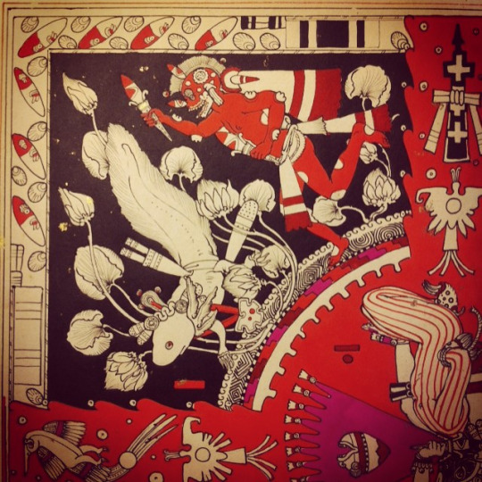
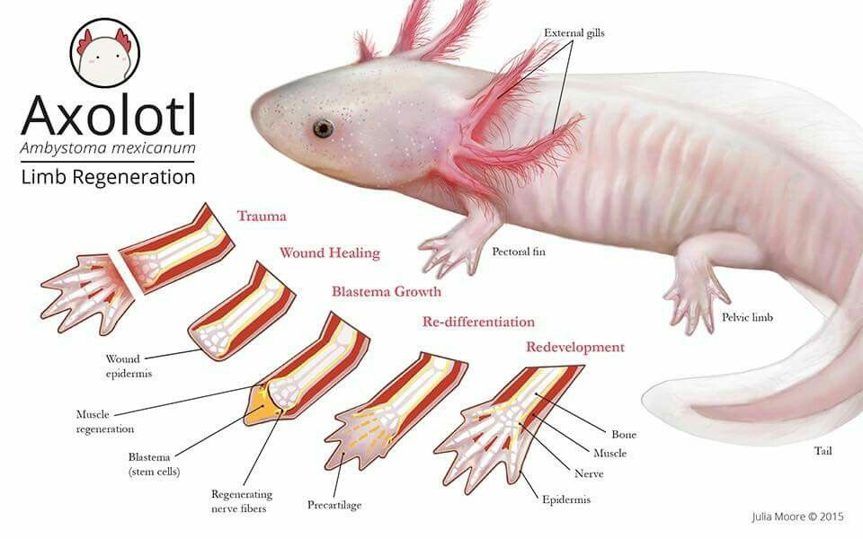
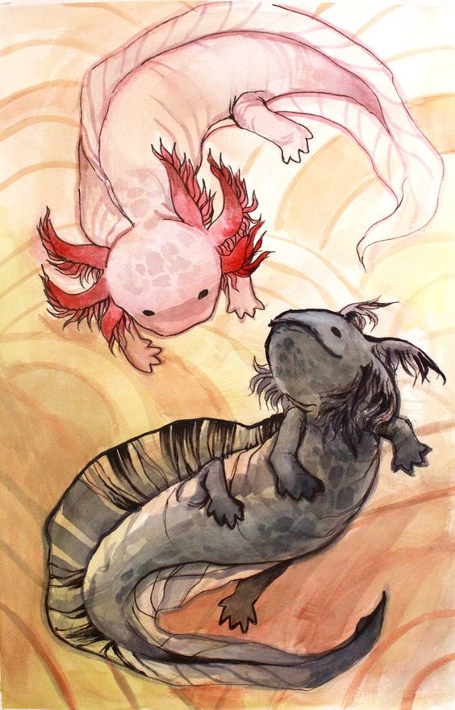

Axolotilandia
Axolotes :3
Autor: Esmeralda Gonzalez

El ajolote o axolote mexicano es un anfibio que pertenece a la familia Ambystomatidae, grupo conocido como salamandras topo y al orden Ambystoma. Dentro de este último se encuentran más de 30 especies, pero podemos afirmar que el ajolote mexicano es la más representativa del grupo por diversas razones.
Caracteristicas de Axolotes
- La principal característica del ajolote mexicano es el mantenimiento de los rasgos larvales aún en la adultez, fenómeno biológico que se conoce como neotenia.
- El tamaño promedio del ajolote mexicano es generalmente de 15 cm, aunque puede medir más, pero no sobrepasa los 30 cm.
- Las patas son cortas, las delanteras tienen cuatro dedos, mientras que las traseras tienen cinco y no desarrolla uñas. La cabeza es tanto ancha como robusta, los ojos pequeños, sin parpados; el cuerpo alargado y aplanado de cada lado.
- La otra característica peculiar del ajolote es su coloración, ya que en estado silvestre sus tonalidades son oscuras, apreciándose como negro, gris, marrón o verde intenso.

Cosas que comen los axolotes
- Microalgas
- Alga espirulina
- Nauplios de artemis salina
- Lombriz de tierra
Enfermedades usales de los axolotes
- Origen parasitario
- Origen bacteriano
- Origen viral
Mitologia
El axolote aparece ligado a los más antiguos mitos mexicas. Su nombre en nahúatl (axólotl) quiere decir “xólotl de agua” y se ha traducido como “juguete de agua”, “monstruo acuático”, “gemelo de agua” o “perro de agua”. Es evidente que hace referencia al dios Xólotl, una especie de Caín heroico de los nahuas que es el hermano gemelo de Quetzalcóatl o, para ser preciso, su doble. Mientras Quetzalcóatl es el “gemelo precioso”, Xólotl es monstruoso y deforme. En la leyenda del quinto sol se indica que en la ciudad sagrada de Teotihuacán los aztecas creían que cuando Nanahuatzin y Tecuciztécatl se tiraron a la hoguera se convirtieron en el sol y la luna respectivamente; los dioses, al darse cuenta de que el sol y los astros seguían sin moverse, decidieron morir también, pero hubo uno, Xólotl, que se negó al sacrificio. Xólotl es un dios que le tiene miedo a la muerte y no la acepta. Por ello escapa del sacrificio mediante sus poderes de transformación. Primero se convirtió en maíz, pero el verdugo lo encontró; se escapó nuevamente y se transformó en maguey, pero fue encontrado una vez más. Finalmente se transformó en axolote, forma en la que encontró la muerte. Es común que las personas expresen un conocimiento erróneo acerca de qué es y cómo es un axolote. Es frecuente escuchar comentarios como “Son animales que salen en los charcos de agua cuando llueve”, pero son los renacuajos, y no los axolotes, los que se ajustan a esta descripción; también se les ha confundido con peces o unas lagartijas. No obstante, en realidad se trata de una salamandra, que es un anfibio. El axolote, a diferencia de otras salamandras y anfibios como las ranas, no presenta metamorfosis; de hecho, alcanza la madurez sexual y puede reproducirse sin perder las características físicas y morfológicas de su estado larvario (esta característica se conoce como neotenia). Este anfibio “de la eterna juventud” permanece en un medio acuático toda su vida y es capaz de regenerar todas las partes de su cuerpo, incluido el sistema nervioso, situación que lo ha hecho muy atractivo para científicos de todo el mundo.
Anatomia
El axolote de Xochimilco (Ambystoma mexicanum) es un anfibio del orden Urodelo, que pertenece a la familia Ambystomatidae, misma que agrupa a las salamandras. Los axolotes presentan esqueleto que al no estar completamente osificado difiere de la mayoría de los vertebrados. Este proceso es evidente en la zona de las branquias que están compuestas en su totalidad por cartílago. El cráneo de los anfibios en general, presenta mayor número de estructuras cartilaginosas que óseas, y presenta conductos que comunican la cavidad nasal con la bucal, llamados coanas u orificio nasal interno. En la columna vertebral el número de vertebras presentes es de 50 aunque pueden variar Si consideramos que el número de vertebras de la región de la cola puede ir desde 30 hasta 35. La columna se puede diferenciar en cuatro partes: cervical, torácica, sacra y caudal. Otro aspecto interesante es que poseen costillas rudimentarias que se observan a lo largo de todo el cuerpo. Los axolotes poseen cuatro extremidades que se desarrollan a partir de la tercera semana de edad. Las dos extremidades anteriores poseen cuatro dedos mientras que las dos posteriores poseen cinco.
Conservación
Actualmente las acciones para la conservación de esta especie se están centrando en mejorar las condiciones del Lago de Xochimilco a través de la educación para la conservación, ecoturismo, restauración del hábitat, control de especies introducidas de peces (como carpas y tilapias) y estrategias alternas para la conservación de axolotes in situ como la generación de refugios. Los proyectos que actualmente se desarrollan integran los cuatro grandes sectores para la conservación: político, social, económico y científico. La reintroducción de axolotes que han sido criados en cautiverio no se recomienda hasta que las amenazas (como crecimiento urbano, ganadería, uso de agroquímicos, fragmentación del hábitat, control de especies introducidas, posibles enfermedades, riesgos genéticos, entre otras) puedan ser mitigadas o evaluadas dependiendo del caso. Es claro que la liberación de axolotes en los canales de Xochimilco u otros cuerpos de agua no es una opción sana para el animal ni para el ecosistema. En tal caso, si la intención en algún momento es deshacerse del organismo, lo adecuado sería regalarlo. Es importante recordar que el promedio de vida de un axolote en cautiverio es de 8 a 10 años.
Para mas informacion dar aquiFormulario de identificacion de Animales
¿Qué edad tiene tu axolote?